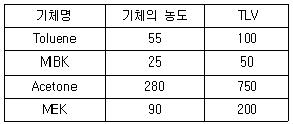
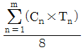
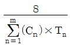
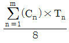
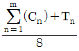
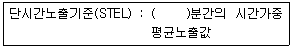
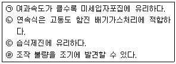
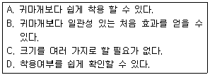

산업위생관리기사 (2020-06-06 기출문제)
1과목: 산업위생학개론
1. 직업성 질환 발생의 요인을 직접적인 원인과 간접적인 원인으로 구분할 때 직접적인 원인에 해당되지 않는 것은?
- 물리적 환경요인
- 화학적 환경요인
- 작업강도와 작업시간적 요인
- 부자연스런 자세와 단순 반복 작업 등의 작업요인
(정답률: 62%)

2. 산업안전보건법령상 시간당 200~350kcal의 열량이 소요되는 작업을 매시간 50%작업, 50%휴식시의 고온노출 기준(WBGT)은?
- 26.7℃
- 28.0℃
- 28.4℃
- 29.4℃
(정답률: 50%)
3. 산업안전보건법령상 사무실 오염물질에 대한 관리기준으로 옳지 않은 것은?
- 라돈 : 148Bq/m3이하
- 일산화탄소 : 10ppm이하
- 이산화질소 : 0.1ppm이하
- 포름알데히드 : 500μg/m3이하
(정답률: 60%)
4. 유해인자와 그로 인하여 발생되는 직업병이 올바르게 연결된 것은?
- 크롬 - 간암
- 이상기압 - 침수족
- 망간 - 비중격천공
- 석면 - 악성중피종
(정답률: 77%)
5. 근골격계 부담작업으로 인한 건강장해 예방을 위한 조치 항목으로 옳지 않은 것은?
- 근골격계 질환 예방관리 프로그램을 작성ㆍ시행 할 경우에는 노사협의를 거쳐야 한다.
- 근골격계 질환 예방관리 프로그램에는 유해요인조사, 작업환경개선, 교육ㆍ훈련 및 평가 등이 포함되어 있다.
- 사업주는 25kg 이상의 중량물을 들어 올리는 작업에 대하여 중량과 무게중심에 대하여 안내표시를 하여야 한다.
- 근골격계 부담작업에 해당하는 새로운 작업ㆍ설비 등을 도입한 경우, 지체 없이 유해요인조사를 실시하여야 한다.
(정답률: 69%)
6. 연평균 근로자수가 5000명인 사업장에서 1년 동안에 125건의 재해로 인하여 250명의 사상자가 발생하였다면, 이 사업장의 연천인율은 얼마인가? (단, 이 사업장의 근로자 1인당 연간 근로시간은 2400시간이다.)
- 10
- 25
- 50
- 200
(정답률: 55%)
7. 영국의 외과의사 Pott에 의하여 발견된 직업성 암은?
- 비암
- 폐암
- 간암
- 음낭암
(정답률: 86%)
8. 산업피로(industrial fatigue)에 관한 설명으로 옳지 않은 것은?
- 산업피로의 유발원인으로는 작업부하, 작업환경조건, 생활조건 등이 있다.
- 작업과정 사이에 짧은 휴식보다 장시간의 휴식시간을 삽입하여 산업피로를 경감시킨다.
- 산업피로의 검사방법은 한 가지 방법으로 판정하기는 어려우므로 여러 가지 검사를 종합하여 결정한다.
- 산업피로란 일반적으로 작업현장에서 고단하다는 주관적인 느낌이 있으면서, 작업능률이 떨어지고, 생체기능의 변화를 가져오는 현상이라고 정의할 수 있다.
(정답률: 81%)
9. 산업안전보건법령상 사무실 공기의 시료채취 방법이 잘못 연결된 것은?
- 일산화탄소 - 전기화학검출기에 의한 채취
- 이산화질소 - 캐니슽(canister)를 이용한 채취
- 이산화탄소 - 비분산적외선검출기에 의한 채취
- 총부유세균 - 충돌법을 이용한 부유세균채취기로 채취
(정답률: 52%)
10. 재해예방의 4 원칙에 대한 설명으로 옳지 않은 것은?
- 재해발생에는 반드시 그 원인이 있다.
- 재해가 발생하면 반드시 손실도 발생한다.
- 재해는 원인 제거를 통하여 예방이 가능하다.
- 재해예방을 위한 가능한 안전대책은 반드시 존재한다.
(정답률: 76%)
11. 작업환경측정기관이 작업환경측정을 한 경우 결과를 시료채취를 마친 날부터 며칠 이내에 관할 지방고용노동관서의 장에게 제출하여야 하는가? (단, 제출기간의 연장은 고려하지 않는다.)
- 30일
- 60일
- 90일
- 120일
(정답률: 79%)
12. 산업안전보건법령상 보건관리자의 업무가 아닌 것은? (단, 그 밖에 작업관리 및 작업환경관리에 관한 사항은 제외한다.)
- 물질안전보건자료의 게시 또는 비치에 관한 보좌 및 지도ㆍ조언
- 보건교육계획의 수립 및 보건교육 실시에 관한 보좌 및 지도ㆍ조언
- 안전인증대상기계등 보건과 관련된 보호구의 점검, 지도, 유지에 관한 보좌 및 지도ㆍ조언
- 전체 환기장치 등에 관한 설비의 점검과 작업방법의 공학적 개선에 관한 보좌 및 지도ㆍ조언
(정답률: 61%)
13. 인간공학에서 고려해야 할 인간의 특성과 가장 거리가 먼 것은?
- 인간의 습성
- 신체의 크기와 작업환경
- 기술, 집단에 대한 적응능력
- 인간의 독립성 및 감정적 조화성
(정답률: 72%)
14. 산업안전보건법령상 유해위험방지계획서의 제출 대상이 되는 사업이 아닌 것은? (단, 모두 전기 계약용량이 300킬로와트 이상이다.)
- 항만운송사업
- 반도체 제조업
- 식료품 제조업
- 전자부품 제조업
(정답률: 66%)
15. 산업위생전문가의 윤리강령 중 “전문가로서의 책임”에 해당하지 않는 것은?
- 기업체의 기밀은 누설하지 않는다.
- 과학적 방법의 적용과 자료의 해석에서 객관성을 유지한다.
- 근로자, 사회 및 전문 직종의 이익을 위해 과학적 지식은 공개하거나 발표하지 않는다.
- 전문적 판단이 타협에 의하여 좌우될 수 있는 상황에는 개입하지 않는다.
(정답률: 80%)
16. 작업자세는 피로 또는 작업 능률과 밀접한 관계가 있는데, 바람직한 작업자세의 조건으로 보기 어려운 것은?
- 정적 작업을 도모한다.
- 작업에 주로 사용하는 팔은 심장높이에 두도록 한다.
- 작업물체와 눈과의 거리는 명시거리로 30cm 정도를 유지토록 한다.
- 근육을 지속적으로 수축시키기 때문에 불안정한 자세는 피하도록 한다.
(정답률: 83%)
17. 지능검사, 기능검사, 인성검사는 직업 적성검사 중 어느 검사항목에 해당되는가?
- 감각적 기능검사
- 생리적 적성검사
- 신체적 적성검사
- 심리적 적성검사
(정답률: 73%)
18. 산업위생 활동 중 유해인자의 양적, 질적인 정도가 근로자들의 건강에 어떤 영향을 미칠 것인지 판단하는 의사결정단계는?
- 인지
- 예측
- 측정
- 평가
(정답률: 59%)
19. 근로자에 있어서 약한 손(왼손잡이의 경우 오른손)의 힘은 평균 45 kp라고 한다. 이 근로자가 무게 18 kg인 박스를 두 손으로 들어 올리는 작업을 할 경우의 작업강도(%MS)는?
- 15%
- 20%
- 25%
- 30%
(정답률: 73%)
20. 물체 무게가 2kg, 권고중량한계가 4kg일 때 NIOSH의 중량물 취급지수(LI, Lifting Index)는?
- 0.5
- 1
- 2
- 4
(정답률: 68%)
2과목: 작업위생측정 및 평가
21. 시료채취기를 근로자에게 착용시켜 가스ㆍ증기ㆍ미스트ㆍ흄 또는 분진 등을 호흡기 위치에서 채취하는 것을 무엇이라고 하는가?
- 지역시료채취
- 개인시료채취
- 작업시료채취
- 노출시료채취
(정답률: 75%)
22. 공장 내 지면에 설치된 한 기계로부터 10m 떨어진 지점의 소음이 70dB(A)일 때, 기계의 소음이 50ddB(A)로 들리는 지점은 기계에서 몇 m 떨어진 곳인가? (단, 점음원을 기준으로 하고, 기타 조건은 고려하지 않는다.)
- 50
- 100
- 200
- 400
(정답률: 65%)
23. Low Volume Air Sampler로 작업장 내 시료를 측정한 결과 2.55mg/m3이고, 상대농도계로 10분간 측정한 결과 155이고, dark count가 6일 때 질량농도의 변환계수는?
- 0.27
- 0.36
- 0.64
- 0.85
(정답률: 25%)
24. 소음작업장에서 두 기계 각각의 음압레벨이 90dB로 동일하게 나타났다면 두 기계가 모두 가동되는 이 작업장의 음압레벨(dB)은? (단, 기타 조건은 같다.)
- 93
- 95
- 97
- 99
(정답률: 72%)
25. 대푯값에 대한 설명 중 틀린 것은?
- 측정값 중 빈도가 가장 많은 수가 최빈값이다.
- 가중평균은 빈도를 가중치로 택하여 평균값을 계산한다.
- 중앙값은 측정값을 모두 나열하였을 때 중앙에 위치하는 측정값이다.
- 기하평균은 n개의 측정값이 있을 때 이들의 합을 개수로 나눈 값으로 산업위생분야에서 많이 사용한다.
(정답률: 71%)
26. 금속 도장 작업장의 공기 중에 혼합된 기체의 농도와 TLV가 다음 표와 같을 때, 이 작업장의 노출지수(EI)는 얼마인가? (단, 상가 작용 기준이며 농도 및 TLV의 단위는 ppm이다.)

- 1.573
- 1.673
- 1.773
- 1.873
(정답률: 71%)
27. 허용농도(TLV) 적용상 주의할 사항으로 틀린 것은?
- 대기오염평가 및 관리에 적용될 수 없다.
- 기존의 질병이나 육체적 조건을 판단하기 위한 척도로 사용될 수 없다.
- 사업장의 유해조건을 평가하고 개선하는 지침으로 사용될 수 없다.
- 안전농도와 위험농도를 정확히 구분하는 경계선이 아니다.
(정답률: 67%)
28. 소음 측정을 위한 소음계(Sound level meter)는 주파수에 따른 사람의 느낌을 감안하여 세 가지 특성 즉 A, B 및 C 특성에서 음압을 측정 할 수 있다. 다음 내용에서 A, B 및 C 특성에서 음압을 측정 할 수 있다. 다음 내용에서 A, B 및 C 특성에 대한 설명이 바르게 된 것은?
- A특성 보정치는 4000Hz 수준에서 가장 크다.
- B특성 보정치와 C특성 보정치는 각각 70phon과 40phon의 등감곡선과 비슷하게 보정하여 측정한 값이다.
- B특성 보정치(dB)는 2000Hz에서 값이 0이다.
- A특성 보정치(dB)는 1000Hz에서 값이 0이다.
(정답률: 42%)
29. 작업환경측정 및 정도관리 등에 관한 고시상 원자흡광광도법(AAS)으로 분석할 수 있는 유해인자가 아닌 것은?
- 코발트
- 구리
- 산화철
- 카드뮴
(정답률: 59%)
30. 불꽃 방식 원자흡광광도계가 갖는 특징으로 틀린 것은?
- 분석시간이 흑연으로 장치에 비하여 적게 소요된다.
- 혈액이나 소변 등 생물학적 시료의 유해금속 분석에 주로 많이 사용된다.
- 일반적으로 흑연로장치나 유도결합플라스마-원자발광분석기에 비하여 저렴하다.
- 용질이 고농도로 용해되어 있는 경우 버너의 슬롯을 막을 수 있으며 점성이 큰 용액이 분무가 어려워 분무구멍을 막아버릴 수 있다.
(정답률: 51%)
31. 작업환경측정결과를 통계처리시 고려해야 할 사항으로 적절하지 않은 것은?
- 대표성
- 불변성
- 통계적 평가
- 2차 정규분포 여부
(정답률: 57%)
32. 1N-HCI(F=1,000) 500mL를 만들기 위해 필요한 진한 염산의 부피(mL)는? (단, 진한 염산의 물성은 비중 1.18, 함량 35%이다.)
- 약 18
- 약 36
- 약 44
- 약 66
(정답률: 33%)
33. 고온의 노출기준에서 작업자가 경작업을 할 때, 휴식 없이 계속 작업할 수 있는 기준에 위배되는 온도는? (단, 고용노동부 고시를 기준으로 한다.)
- 습구흑구온도지수: 30℃
- 태양광이 내리쬐는 옥외장소
자연습구온도: 28℃
흑구온도: 32℃
건구온도: 40℃ - 태양광이 내리쬐는 옥외장소
자연습구온도: 29℃
흑구온도: 33℃
건구온도: 33℃ - 태양광이 내리쬐는 옥외 장소
자연습구온도: 30℃
흑구온도: 30℃
건구온도: 30℃
(정답률: 55%)
34. 다음 중 고열 측정기기 및 측정방법 등에 관한 내용으로 틀린 것은?
- 고열은 습구흑구온도지수를 측정할 수 있는 기기 또는 이와 동등 이상의 성능을 가진 기기를 사용한다.
- 고열을 측정하는 경우 측정기 제조자가 지정한 방법과 시간을 준수하여 사용한다.
- 고열작업에 대한 측정은 1일 작업시간 중 최대로 고열에 노출되고 있는 1시간을 30분 간격으로 연속하여 측정한다.
- 측정기의 위치는 바닥 면으로부터 50cm이상, 150cm 이하의 위치에서 측정한다.
(정답률: 74%)
35. 다음 중 활성탄에 흡착된 유기화합물을 탈착하는데 가장 많이 사용하는 용매는?
- 톨루엔
- 이황화탄소
- 클로로포름
- 메틸클로로포름
(정답률: 65%)
36. 입경이 50㎛이고 비중이 1.32인 입자의 침강속도(cm/s)는 얼마인가?
- 8.6
- 9.9
- 11.9
- 13.6
(정답률: 71%)
37. 작업자가 유해물질에 노출된 정도를 표준화하기 위한 계산식으로 옳은 것은? (단, 고용노동부 고시를 기준으로 하며, C는 유해물질의 농도, T는 노출시간을 의미한다.)




(정답률: 71%)
38. 원자흡광분광법의 기본 원리가 아닌 것은?
- 모든 원자들은 빛을 흡수한다.
- 빛을 흡수할 수 있는 곳에서 빛은 각 화학적 원소에 대한 특정파장을 갖는다.
- 흡수되는 빛의 양은 시료에 함유되어 있는 원자의 농도에 비례한다.
- 컬럼 안에서 시료들은 충진제와 친화력에 의해서 상호 작용하게 된다.
(정답률: 41%)
39. 다음 ( )안에 들어갈 수치는?

- 10
- 15
- 20
- 40
(정답률: 79%)
40. 흡수액 측정법에 주로 사용되는 주요 기구로 옳지 않은 것은?
- 테드라 백(Tedlar bag)
- 프리티드 버블러(Fritted bubbler)
- 간이 가스 세척병(Simple gas washing bottle)
- 유리구 충진분리관(Packed glass bead column)
(정답률: 55%)
3과목: 작업환경관리대책
41. 무거운 분진(납분진, 주물사, 금속가루분진)의 일반적인 반송속도로 적절한 것은?
- 5m/s
- 10m/s
- 15m/s
- 25m/s
(정답률: 54%)
42. 여과제진장치의 설명 중 옳은 것은?

- ㉠, ㉢
- ㉡, ㉣
- ㉡, ㉢
- ㉠, ㉡
(정답률: 46%)
43. 호흡기 보호구의 밀착도 검사(fit test)에 대한 설명이 잘못된 것은?
- 정량적인 방법에는 냄새, 맛, 자극물질 등을 이용한다.
- 밀착도 검사란 얼굴피부 접촉면과 보호구 안면부가 적합하게 밀착되는지를 측정하는 것이다.
- 밀착도 검사를 하는 것은 작업자가 작업장에 들어가기 전 누설정도를 최소화시키기 위함이다.
- 어떤 형태의 마스크가 작업자에게 적합한지 마스크를 선택하는데 도움을 주어 작업자의 건강을 보호한다.
(정답률: 73%)
44. 어떤 공장에서 접착공정이 유기용제 중독의 원인이 되었다. 직업병 예방을 위한 작업환경관리 대책이 아닌 것은?
- 신선한 공기에 의한 희석 및 환기실시
- 공정의 밀폐 및 격리
- 조업방법의 개선
- 보건교육 미실시
(정답률: 78%)
45. 후드의 개구(opening) 내부로 작업환경의 오염공기를 흡인시키는데 필요한 압력차에 관한 설명 중 적합하지 않은 것은?
- 정지상태의 공기가속에 필요한 것 이상의 에너지이어야 한다.
- 개구에서 발생되는 난류손실을 보전할 수 있는 에너지이어야 한다.
- 개구에서 발생되는 난류손실은 형태나 재질에 무관하게 일정하다.
- 공기의 가속에 필요한 에너지는 공기의 이동에 필요한 속도압과 같다.
(정답률: 69%)
46. 90°곡관의 반경비가 2.0일 때 압력손실계수는 0.27이다. 속도압이 14mmH2O라면 곡관의 압력손실(mmH2O)은?
- 7.6
- 5.5
- 3.8
- 2.7
(정답률: 49%)
47. 용기충진이나 콘베이어 적재와 같이 발생기류가 높고 유해물질이 활발하게 발생하는 작업조건의 제어속도로 가장 알맞는 것은? (단, ACGIH 권고 기준)
- 2.0 m/s
- 3.0 m/s
- 4.0 m/s
- 5.0 m/s
(정답률: 36%)
48. 귀덮개의 장점을 모두 짝지은 것으로 가장 옳은 것은?

- A, B, D
- A, B, C
- A, C, D
- A, B, C, D
(정답률: 67%)
49. 강제환기의 효과를 제고하기 위한 원칙으로 틀린 것은?
- 오염물질 배출구는 가능한 한 오염원으로부터 가까운 곳에 설치하여 점 환기 현상을 방지한다.
- 공기배출구와 근로자의 작업위치 사이에 오염원이 위치하여야 한다.
- 공기가 배출되면서 오염장소를 통과하도록 공기배출구와 유입구의 위치를 선정한다.
- 오염원 주위에 다른 작업 공정이 있으면 공기배출량을 공급량보다 약간 크게 하여 음압을 형성하여 주위 근로자에게 오염 물질이 확산 되지 않도록 한다.
(정답률: 63%)
50. 후드 흡인기류의 불량상태를 점검할때 필요하지 않은 측정기기는?
- 열선풍속계
- Threaded thermometer
- 연기발생기
- Pitot tube
(정답률: 51%)
51. 원심력 송풍기 중 다익형 송풍기에 관한 설명으로 가장 거리가 먼 것은?
- 송풍기의 임펠러가 다람쥐 쳇바퀴 모양으로 생겼다.
- 큰 압력손실에서 송풍량이 급격하게 떨어지는 단점이 있다.
- 고강도가 요구되기 때문에 제작비용이 비싸다는 단점이 있다.
- 다른 송풍기와 비교하여 동일 송풍량을 발생시키기 위한 임펠러 회전속도가 상대적으로 낮기 때문에 소음이 작다.
(정답률: 62%)
52. 덕트(duct)의 압력손실에 관한 설명으로 옳지 않은 것은?
- 직관에서의 마찰손실과 형태에 따른 압력손실로 구분할 수 있다.
- 압력손실은 유체의 속도압에 반비례한다.
- 덕트 압력손실은 배관의 길이와 정비례한다.
- 덕트 압력손실은 관직경과 반비례한다.
(정답률: 57%)
53. 송풍기 깃이 회전방향 반대편으로 경사지게 설계되어 충분한 압력을 발생시킬 수 있고, 원심력송풍기 중 효율이 가장 좋은 송풍기는?
- 후향날개형 송풍기
- 방사날개형 송풍기
- 전향날개형 송풍기
- 안내깃이 붙은 축류 송풍기
(정답률: 62%)
54. 전기집진장치의 장점으로 옳지 않은 것은?
- 가연성 입자의 처리에 효율적이다.
- 넓은 범위의 입경과 분진농도에 집진효율이 높다.
- 압력손실이 낮으므로 송풍기의 가동비용이 저렴하다.
- 고온 가스를 처리할 수 있어 보일러와 철강로 등에 설치할 수 있다.
(정답률: 57%)
55. 어떤 원형덕트에 유체가 흐르고 있다. 덕트의 직경을 1/2로 하면 직관부분의 압력손실은 몇 배로 되는가? (단, 달시의 방정식을 적용한다.)
- 4배
- 8배
- 16배
- 32배
(정답률: 36%)
56. 눈 보호구에 관한 설명으로 틀린 것은? (단, KS 표준 기준)
- 눈을 보호하는 보호구는 유해광선 차광 보호구와 먼지나 이물을 막아주는 방진안경이 있다.
- 400A 이상의 아크 용접 시 차광도 번호 14의 차광도 보호안경을 사용하여야 한다.
- 눈, 지붕등으로부터 반사광을 받는 작업에서는 차광도 번호 1.2-3 정도의 차광도 보호안경을 사용하는 것이 알맞다.
- 단순히 눈의 외상을 막는데 사용되는 보호안경은 열처리를 하거나 색깔을 넣은 렌즈를 사용할 필요가 없다.
(정답률: 63%)
57. 소음 작업장에 소음수준을 줄이기 위하여 흡음을 중심으로 하는 소음저감대책을 수립한 후, 그 효과를 측정하였다. 소음 감소효과가 있었다고 보기 어려운 경우는?
- 음의 잔향시간을 측정하였더니 잔향시간이 약간이지만 증가한 것으로 나타났다.
- 대책 후의 총흡음량이 약간 증가하였다.
- 소음원으로 부터 거리가 멀어질수록 소음수준이 낮아지는 정도가 대책수립 전보다 커졌다.
- 실내상수 R을 계산해보니 R값이 대책 수립전보다 커졌다.
(정답률: 62%)
58. 국소환기시설에 필요한 공기송풍량을 계산하는 공식 중 점흡인에 해당하는 것은?
- Q=4π×x2×Vc
- Q=2π×L×x×Vc
- Q=60×0.75×Vc(10x2+A)
- Q=60×0.5×Vc(10x2+A)
(정답률: 43%)
59. 확대각이 10°인 원형 확대관에서 입구직관의 정압은 -15mmH2O, 속도앞은 35mmH2O이고, 확대된 출구직관의 속도압은 25mmH2O이다. 확대측의 정압(mmH2O)은? (단, 확대각이 10°일 때 압력손실계수(ζ)는 0.28이다.)
- 7.8
- 15.6
- -7.8
- -15.6
(정답률: 37%)
60. 목재분진을 측정하기 위한 시료채취장치로 가장 적합한 것은?
- 활성탄관(charcoal tube)
- 흡입성분진 시료채취기(IOM sampler)
- 호흡성분진 시료채취기(aluminum cyclone)
- 실리카겔관(silica gel tube)
(정답률: 55%)
4과목: 물리적유해인자관리
61. 질식우려가 있는 지하 맨홀 작업에 앞서서 준비해야 할 장비나 보호구로 볼 수 없는 것은?
- 안전대
- 방독 마스크
- 송기 마스크
- 산소농도 측정기
(정답률: 75%)
62. 진동 발생원에 대한 대책으로 가장 적극적인 방법은?
- 발생원의 격리
- 보호구 착용
- 발생원의 제거
- 발생원의 재배치
(정답률: 75%)
63. 전리방사선에 의한 장해에 해당하지 않는 것은?
- 참호족
- 피부장해
- 유전적 장해
- 조혈기능 장해
(정답률: 74%)
64. 고소음으로 인한 소음성 난청 질환자를 예방하기 위한 작업환경관리방법 중 공학적 개선에 해당되지 않는 것은?
- 소음원의 밀폐
- 보호구의 지급
- 소음원의 벽으로 격리
- 작업장 흡음시설의 설치
(정답률: 73%)
65. 비이온화 방사선의 파장별 건강에 미치는 영향으로 옳지 않은 것은?
- UV-A : 315~400nm - 피부노화촉진
- IR-B : 780~1400nm - 백내장, 각막화상
- UV-B : 280~315nm - 발진, 피부암, 광결막염
- 가시광선 : 400~700nm - 광화학적이거나 열에 의한 각막손상, 피부화상
(정답률: 57%)
66. WBGT에 대한 설명으로 옳지 않은 것은?
- 표시단위는 절대온도(K)이다.
- 기온, 기습, 기류 및 복사열을 고려하여 계산된다.
- 태양광선이 있는 옥외 및 태양광선이 없는 옥내로 구분된다.
- 고온에서의 작업휴식시간비를 결정하는 지표로 활용된다.
(정답률: 70%)
67. 작업자 A의 4시간 작업 중 소음노출량이 76%일 때, 측정시간에 있어서의 평균치는 약 몇 dB(A)인가?
- 88
- 93
- 98
- 103
(정답률: 40%)
68. 이온화 방사선과 비이온화 방사선을 구분하는 광자에너지는?
- 1 eV
- 4 eV
- 12.4 eV
- 15.6 eV
(정답률: 73%)
69. 이상기압에 의하여 발생하는 직업병에 영향을 미치는 유해인자가 아닌 것은?
- 산소(O2)
- 이산화황(SO2)
- 질소(N2)
- 이산화탄소(CO2)
(정답률: 71%)
70. 채광계획에 관한 설명으로 옳지 않는 것은?
- 창의 면적은 방바닥 면적의 15~20%가 이상적이다.
- 조도의 평등을 요하는 작업실은 남향으로 하는 것이 좋다.
- 실내 각점의 개각은 4~5°, 입사각은 28°이상이 되어야 한다.
- 유리창은 청결한 상태여도 10~15% 조도가 감소되는 점을 고려한다.
(정답률: 67%)
71. 빛에 관한 설명으로 옳지 않은 것은?
- 광원으로부터 나오는 빛의 세기를 조도라 한다.
- 단위 평면적에서 발산 또는 반사되는 광량을 휘도라 한다.
- 루멘은 1촉광의 광원으로부터 단위 입체각으로 나가는 광속의 단위이다.
- 조도는 어떤 면에 들어오는 광속의 양에 비례하고, 입사면의 단면적에 반비례한다.
(정답률: 48%)
72. 태양으로부터 방출되는 복사 에너지의 52% 정도를 차지하고 피부조직 온도를 상승시켜 충혈, 혈관확장, 각막손상, 두부장해를 일으키는 유해광선은?
- 자외선
- 적외선
- 가시광선
- 마이크로파
(정답률: 44%)
73. 감압병의 예방 및 치료의 방법으로 옳지 않은 것은?
- 감압이 끝날 무렵에 순수한 산소를 흡입시키면 예방적 효과와 함께 감압시간을 단축시킬 수 있다.
- 잠수 및 감압방법은 특별히 잠수에 익숙한 사람을 제외하고는 1분에 10m 정도씩 잠수하는 것이 안전하다.
- 고압환경에서 작업 시 질소를 헬륨으로 대치하면 성대에 손상을 입힐 수 있으므로 할로겐 가스로 대치한다.
- 감압병의 증상을 보일 경우 환자를 인공적 고압실에 넣어 혈관 및 조직 속에 발생한 질소의 기포를 다시 용해시킨 후 천천히 감압한다.
(정답률: 75%)
74. 흑구온도는 32℃, 건구온도는 27℃, 자연습구온도는 30℃인 실내작업장의 습구ㆍ흑구온도지수는?
- 33.3℃
- 32.6℃
- 31.3℃
- 30.6℃
(정답률: 71%)
75. 저온환경에서 나타나는 일차적인 생리적 반응이 아닌 것은?
- 체표면적의 증가
- 피부혈관의 수축
- 근육긴장의 증가와 떨림
- 화학적 대사작용의 증가
(정답률: 60%)
76. 소음에 의하여 발생하는 노인성 난청의 청력손실에 대한 설명으로 옳은 것은?
- 고주파영역으로 갈수록 큰 청력손실이 예상된다.
- 2000Hz에서 가장 큰 청력장애가 예상된다.
- 1000Hz 이하에서는 20 ~ 30dB의 청력손실이 예상된다.
- 1000 ~ 8000 Hz 영역에서는 0 ~ 20dB의 청력손실이 예상된다.
(정답률: 58%)
77. 고압환경에서 발생할 수 있는 생체증상으로 볼 수 없는 것은?
- 부종
- 압치통
- 폐압박
- 폐수종
(정답률: 68%)
78. 음(sound)에 관한 설명으로 옳지 않은 것은?
- 음(음파)이란 대기압보다 높거나 낮은 압력의 파동이고, 매질을 타고 전달되는 진동에너지이다.
- 주파수란 1초 동안에 음파로 발생되는 고압력 부분과 저압력 부분을 포함한 압력 변화의 완전한 주기를 말한다.
- 음의 단위는 물리적 단위를 쓰는 것이 아니라 감각수준인 데시벨(dB)이라는 무차원의 비교단위를 사용한다.
- 사람이 대기압에서 들을 수 있는 음압은 0.000002N/m2에서부터 20N/m2까지 광범위한 영역이다.
(정답률: 59%)
79. 흡음재의 종류 중 다공질 재료에 해당되지 않는 것은?
- 암면
- 펠트(felt)
- 석고보드
- 발포 수지재료
(정답률: 57%)
80. 6N/m2의 음압은 약 몇 dB의 음압수준인가?
- 90
- 100
- 110
- 120
(정답률: 50%)
5과목: 산업독성학
81. metallothionein에 대한 설명으로 옳지 않은 것은?
- 방향족 아미노산이 없다.
- 주로 간장과 신장에 많이 축적된다.
- 카드뮴과 결합하면 독성이 강해진다.
- 시스테인이 주성분인 아미노산으로 구성된다.
(정답률: 44%)
82. 직업병의 유병율이란 발생율에서 어떠한 인자를 제거한 것인가?
- 기간
- 집단수
- 장소
- 질병종류
(정답률: 51%)
83. 투명한 휘발성 액체로 페인트, 시너, 잉크 등의 용제로 사용되며 장기간 노출될 경우 말초신경장해가 초래되어 사지의 지각상실과 신근마비 등 다발성 신경장해를 일으키는 파라핀계 탄화수소의 대표적인 유해물질은?
- 벤젠
- 노말헥산
- 톨루엔
- 클로로포름
(정답률: 40%)
84. 급성 전신중독을 유발하는데 있어 그 독성이 가장 강한 방향족 탄화수소는?
- 벤젠(Benzene)
- 크실렌(Xylene)
- 톨루엔(Toluene)
- 에틸렌(Ethylene)
(정답률: 48%)
85. 사업장에서 노출되는 금속의 일반적인 독성기전이 아닌 것은?
- 효소억제
- 금속평형의 파괴
- 중추신경계 활성억제
- 필수금속 성분의 대체
(정답률: 31%)
86. 무기성분진에 의한 진폐증에 해당하는 것은?
- 면폐증
- 농부폐증
- 규폐증
- 목재분진폐증
(정답률: 68%)
87. 생물학적 모니터링에 대한 설명으로 옳지 않은 것은?
- 화학물질의 종합적인 흡수 정도를 평가할 수 있다.
- 노출기준을 가진 화학물질의 수보다 BEI를 가지는 화학물질의 수가 더 많다.
- 생물학적 시료를 분석하는 것은 작업환경 측정보다 훨씬 복잡하고 취급이 어렵다.
- 근로자의 유해인자에 대한 노출 정도를 소변, 호기, 혈액 중에서 그 물질이나 대사산물을 측정함으로써 노출 정도를 추정하는 방법을 의미한다.
(정답률: 62%)
88. 니트로벤젠의 화학물질의 영향에 대한 생물학적 모니터링 대상으로 옳은 것은?
- 요에서의 마뇨산
- 적혈구에서의 ZPP
- 요에서의 저분자량 단백질
- 혈액에서의 메트헤모글로빈
(정답률: 45%)
89. 직업성 천식을 유발하는 대표적인 물질로 나열된 것은/
- 알루미늄, 2-Bromopropane
- TDI(Toluene Diisocyanate), Asbestos
- 실리카, DBCP(1,2-dibromo-3-chloropropane)
- TDI(Toluene Diisocyanate), TMA(Trimellitic Anhydride)
(정답률: 64%)
90. 생리적으로는 아무 작용도 하지 않으나 공기 중에 많이 존재하여 산소분압을 저하시켜 조직에 필요한 산소의 공급부족을 초래하는 질식제는?
- 단순 질식제
- 화학적 질식제
- 물리적 질식제
- 생물학적 질식제
(정답률: 66%)
91. 크롬화합물 중독에 대한 설명으로 옳지 않은 것은?
- 크롬중독은 뇨 중의 크롬양을 검사하여 진단한다.
- 크롬 만성중독의 특징은 코, 폐 및 위장에 병변을 일으킨다.
- 중독치료는 배설촉진제인 Ca-EDTA를 투약하여야 한다.
- 정상인보다 크롬취급자는 폐암으로 인한 사망률이 약 13~31 배나 높다고 보고된 바 있다.
(정답률: 71%)
92. 기관지와 폐포 등 폐 내부의 공기통로와 가스교환 부위에 침착되는 먼지로서 공기역학적 지름이 30㎛ 이하의 크기를 가지는 것은?
- 흉곽성 먼지
- 호흡성 먼지
- 흡입성 먼지
- 침착성 먼지
(정답률: 47%)
93. 자극성 접촉피부염에 대한 설명으로 옳지 않은 것은?
- 홍반과 부종을 동반하는 것이 특징이다.
- 작업장에서 발생빈도가 가장 높은 피부질환이다.
- 진정한 의미의 알레르기 반응이 수반되는 것은 포함시키지 않는다.
- 항원에 노출되고 일정시간이 지난 후에 다시 노출되었을 때 세포매개성 과민반응에 의하여 나타나는 부작용의 결과이다.
(정답률: 37%)
94. 중금속과 중금속이 인체에 미치는 영향을 연결한 것으로 옳지 않은 것은?
- 크롬-폐암
- 수은-파킨슨병
- 납-소아의 IQ 저하
- 카드뮴-호흡기의 손상
(정답률: 63%)
95. 작업환경에서 발생될 수 있는 망간에 관한 설명으로 옳지 않은 것은?
- 주로 철합금으로 사용되며, 화학공업에서는 건전지 제조업에 사용된다.
- 만성노출시 언어가 느려지고 무표정하게 되며, 파킨슨 증후군 등의 증상이 나타나기도 한다.
- 망간은 호흡기, 소화기 및 피부를 통하여 흡수되며, 이 중에서 호흡기를 통한 경로가 가장 많고 위험하다.
- 급성중독 시 신장장애를 일으켜 요독증(uremia)으로 8 ~ 10일 이내 사망하는 경우도 있다.
(정답률: 46%)
96. 유해물질을 생리적 작용에 의하여 분류한 자극제에 관한 설명으로 옳지 않은 것은?
- 상기도의 점막에 작용하는 자극제는 크롬산, 산회에틸렌 등이 해당된다.
- 상기도 점막과 호흡기관지에 작용하는 자극제는 불소, 요오드 등이 해당된다.
- 호흡기관의 종말기관지와 폐포점막에 작용하는 자극제는 수용성 높아 심각한 영향을 준다.
- 피부와 점막에 작용하여 부식작용을 하거나 수포를 형성하는 물질을 자극제라고 하며 고농도로 눈에 들어가면 결막염과 각막염을 일으킨다.
(정답률: 41%)
97. 어떤 물질의 독성에 관한 인체실험 결과 안전흠수량이 체중 1kg 당 0.15mg 이었다. 체중이 70kg 인 근로자가 1일 8시간 작업할 경우, 이 물질의 체내 흡수를 안전흡수량 이하로 유지 하려면, 공기 중 농도를 약 얼마 이하로 하여야 하는가? (단, 작업 시 폐환기율(또는 호흡률)은 1.3m3/h, 체내 잔류율은 1.0으로 한다.)
- 0.52mg/m3
- 1.01mg/m3
- 1.57mg/m3
- 2.02mg/m3
(정답률: 62%)
98. ACGIH에서 규정한 유해물질 허용기준에 관한 사항으로 옳지 않은 것은?
- TLV-C : 최고 노출기준
- TLV-STEL : 단기간 노출기준
- TLV-TWA : 8시간 평균 노출기준
- TLV-TLM : 시간가중 한계농도기준
(정답률: 63%)
99. 먼지가 호흡기계로 들어올 때 인체가 가지고 있는 방어기전으로 가장 적정하게 조합된 것은?
- 면역작용과 폐내의 대사 작용
- 폐포의 활발한 가스교환과 대사 작용
- 점액 섬모운동과 가스교환에 의한 정화
- 점액 섬모운동과 폐포의 대식세포의 작용
(정답률: 65%)
100. 공기 중 입자상 물질의 호흡기계 축적기전에 해당하지 않는 것은?
- 교환
- 충돌
- 침전
- 확산
(정답률: 64%)